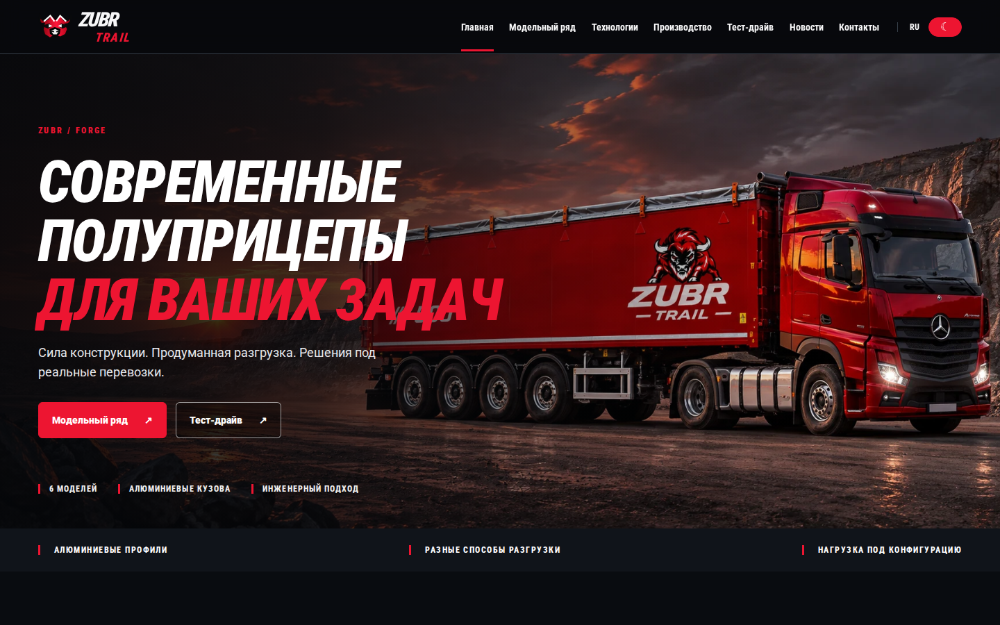
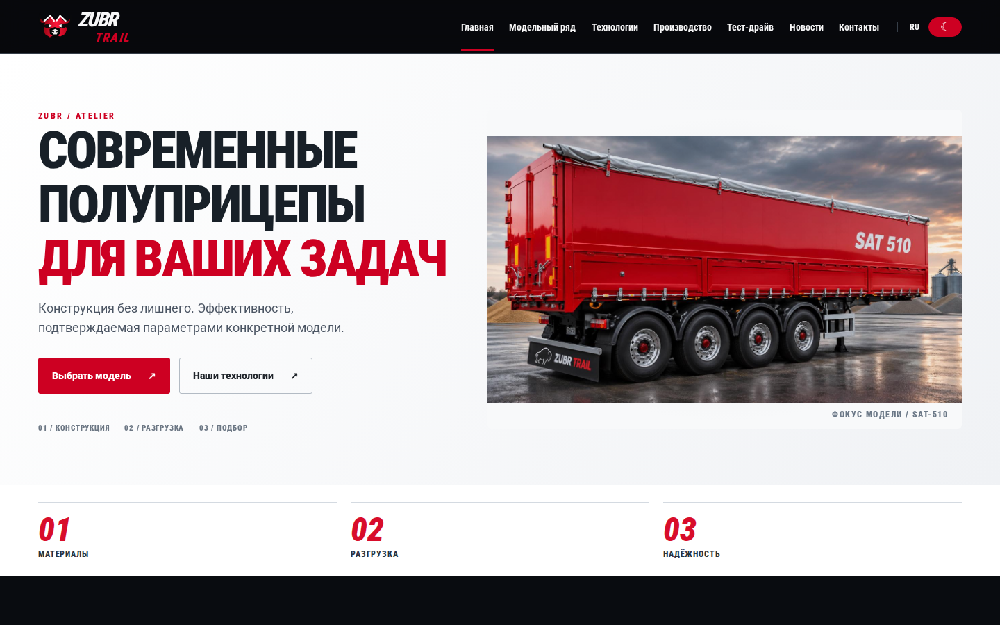
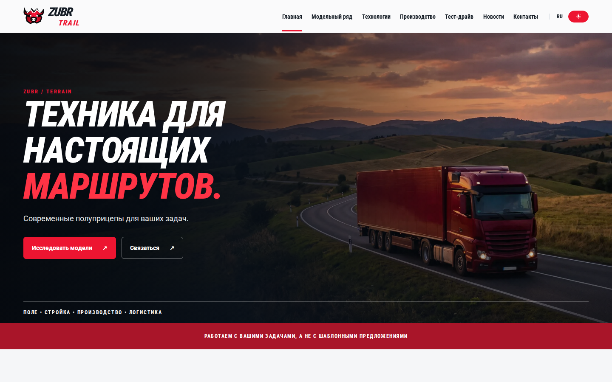
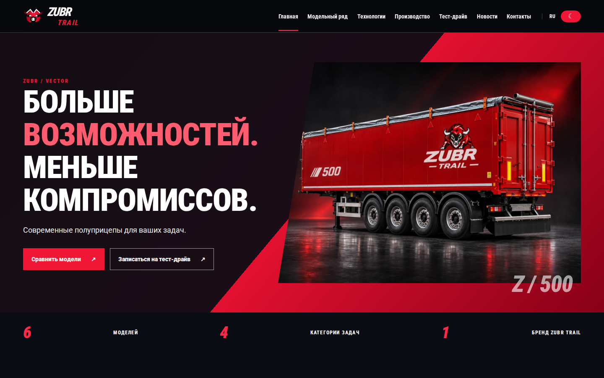

01 / ТЁМНЫЙ ПРЕМИУМ
ZUBR FORGE
Кинематографичный индустриальный стиль, тяжёлая типографика и внимание к мощности техники.
Открыть интерактивный сайт ↗Каждый вариант — работающий адаптивный сайт с каталогом, страницами моделей, технологиями, производством, новостями, контактами и формой тест-драйва. Действующий сайт не заменён.

Кинематографичный индустриальный стиль, тяжёлая типографика и внимание к мощности техники.
Открыть интерактивный сайт ↗
Чистая сетка, светлые поверхности, техническая детализация и понятный выбор техники.
Открыть интерактивный сайт ↗
Дороги, большие фотографии, история эксплуатации и эмоциональная презентация бренда.
Открыть интерактивный сайт ↗
Контрастная геометрия, выразительная модульная сетка и акцент на сравнении моделей.
Открыть интерактивный сайт ↗Изображения визуализированы. Характеристики приведены по опубликованным материалам и зависят от исполнения. Форма тест-драйва открывает почтовое приложение и не отправляет данные автоматически.